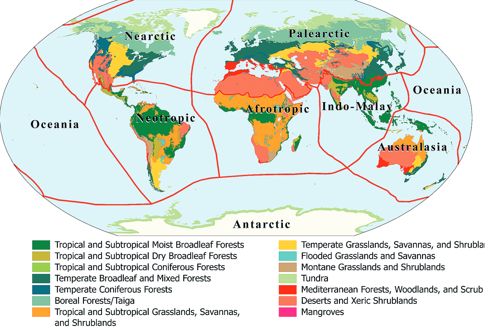
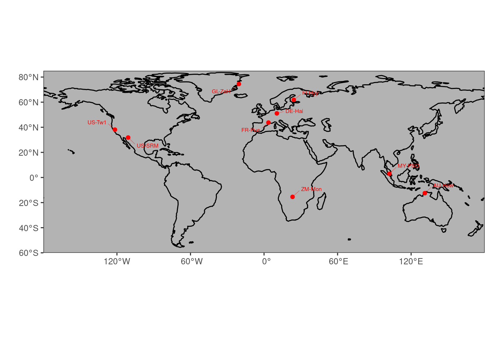
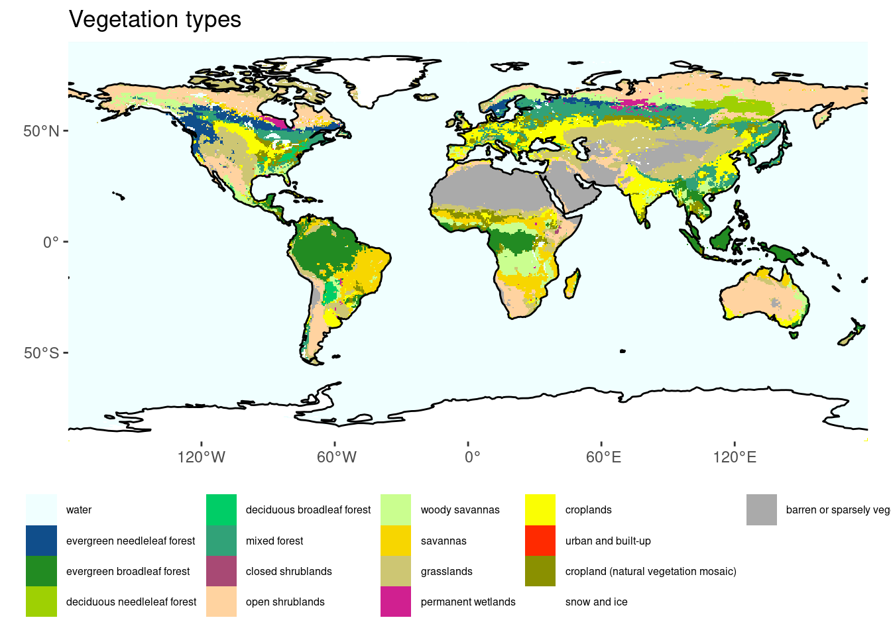

2 Biogeography
2.1 A global view of vegetation
We start with the observation that the global distribution of plants and characteristic assemblies of different plant species is not random, but relates to climate. Around the beginning of the 19th century, Alexander von Humboldt pursued expeditions to different places on Earth and connected the multitude of his local observations into a global view of biogeography. He was the first to realise that vegetation zones along elevational gradients were shifted across different mountain ranges on different continents and located on different latitudes, and that the elevational and latitudinal patterns in vegetation were related to climate - in much the same way across the earth. This finding is visualised by the schematic scientific drawing in Figure 2.1. The figure illustrates, for example, that the treeline increases from the high northern latitudes of Lapland at 68\(^\circ\)N to the Alps and Pyrenees at 42-46\(^\circ\)N and to the Himalaya at 29-32\(^\circ\)N. Or that the elevation at which Betula alba (birch) grows varies from 1000-2000 ft in Lapland, to 4000-5000 ft in the Alps, and about 15,000 ft in the Himalaya. Figure 2.1 also illustrates that the treeline doesn’t increase monotonically with decreasing latitude. Although not spelled out in the figure, this is a hint at the importance of water, along with temperature, for controlling vegetation. We’ll revisit this observation later in this book. Humboldt’s integration of globally distributed observations into his global view of climate as a driver of vegetation was pioneering and forms the basis of our modern approach to understanding and modelling global vegetation patterns and how they are influenced by climate change.
{kind=link}
2.2 Biomes
Global patterns in the distribution of vegetation become apparent when grouping plants and plant functional types (see XXX) into biomes or broad vegetation classes. A global map of biomes following the definition and global delineation by Olson et al. (2001) is given in Figure 2.2. The exact delineation and naming of biomes varies between different sources, but the main distinctions are shared among all of them.

Each biome is characterised by the types of dominant plants (plant functional types), their characteristics (traits), ecosystem structural and functional properties, and landscape processes (e.g., fire). Underlying all of this is the characteristic climate. The following biome classification (based on Bonan (2015) and slightly deviating from Olson et al. (2001)) can be made.
- Tropical moist broadleaved (evergreen) forest
- warm year-round
- no or little precipitation seasonality
- tall vegetation height, high productivity, high total leaf area per unit ground area (leaf area index, LAI), fast decomposition
- large, thin leaves
- Tropical deciduous forest (xeric woodland)
- warm year-round
- dry season
- leaves are (partly) shed during the dry season as a water saving strategy
- shorter stature, lower LAI than tropical moist broadleaved (evergreen) forests
- small, thick leaves
- Tropical savannah
- warm year-round
- pronounced dry season
- widely spaced trees, mixed with grasses
- low plant biomass, deep roots
- regular fires
- Grasslands
- tropical and temperate dry climates
- C3 and C4 grasses (see below), distribution governed by temperature
- temperate grasslands in dry, seasonally hot, semiarid climates with annual precipitation less than about 1000 mm
- transitional between forests and desert
- Shrublands and deserts
- less than 250 mm annual precipitation
- short, widely spaced desert scrub and shrubland
- germination after intense rain, leaf shedding during dry period
- cacti and succulents store water and use the CAM photosnthetic pathway to minimize water loss during photosynthesis
- Temperate forests
- more than 1000 mm annual precipitation
- deciduous and evergreen trees, sometimes mixed
- low winter light and temperature limits productivity
- tall trees
- Mediterranean forests
- additional productivity limitation in summer due to water, but less limited by temperature and light in winter than temperate forests
- mild and moist winters
- short stature trees, dense shrubs
- thick, waxy leaves
- Boreal forests
- very cold winters, cool summers
- winter light and temperature limits productivity
- mostly needle-leaved evergreen
- shorter and more open than temperate forests
- in Siberia: extreme winter low temperatures favour deciduousness of larch (larix decidua)
- Tundra
- tree-less, grass-like sedges, dwarf shrubs, lichens, and mosses
- very short vegetation period
- frozen ground, seasonal thawing of top ~50 cm (permafrost)
2.2.1 Biomes in climate space
Figure 2.2 shows biomes in geographical space - as a global map. Acknowledging their intricate relationship between with climate, biomes can also be delineated in climate space - in a diagram defined by mean annual temperature (MAT) along one axis and mean annual precipitation (MAP) along the other axis.
Code
library(ggplot2)
# library(devtools)
# devtools::install_github("valentinitnelav/plotbiomes")
library(plotbiomes)
plotbiomes::whittaker_base_plot() +
theme_classic()
2.3 Plant functional types
Each biome is characterised by a typical assembly of plant functional types (PFT). PFTs are a grouping of plant species based on their key physiological, morphological, and life history characteristics. That is, we can distinguish between annual (mostly grasses and herbs) and perennial (mostly trees and shrubs) plants, between needle-leaved and broadleaved trees, and between deciduous and evergreen trees. A key physiological distinction can further be made between grasses following the C3 vs. the C4 photosynthetic pathway (see Chapter XXX). Thereby, the bewildering diversity of the animal kingdom can be reduced to a small set of PFT. A common categorisation distinguishes the following PFTs:
- needle-leaved evergreen trees
- broadleaved evergreen trees
- needle-leaved deciduous trees
- broadleaved deciduous trees
- broadleaved annuals (herbs)
- C3 grasses
- C4 grasses
Global vegetation models use PFTs as their basic unit of distinguishing plants. The exact delineation of PFTs implemented in such models may vary from the list given above. Further distinctions may be made and are relevant in a global vegetation and carbon cycle modelling context. For example, only a relatively small subset of plants are known to associate with symbiotic nitrogen (N)-fixing bacteria that live in root nodules of the host plant (“N-fixing plants”, see also Chapter XXX). This association is highly relevant for the N economy of the plant and its productivity and competitiveness under different levels of N availability.
Plants can also be distinguished into the botanical classification of angiosperms (flowering plants) and gymnnosperms (seed-producing plants that include conifers, cycads, and Ginkgo). The distinction between angiosperms and gymnosperms largely aligns with the distinction between needle-leaved and broadleaved plants (but see Ginkgo). The two groups not only distinguished by their phylogenetic heritage, but also by essential characteristics that relate to the efficiency by which they photosynthesise and transpire water. Angiosperm leaves typically exhibit higher photosynthesis and transpiration rates, and are thinner and shorter-lived than leaves of gymnosperms. These differences relate to differences in how the water transport system (plant hydraulics) is built. A larger number and a wider diameter of water transport organs in angiosperms enable a higher water conductivity - essential for sustaining higher photosynthetic rates than in gymnosperms.
2.4 Traits
The physiological, morphological, and life history characteristics that distinguish PFTs determine their productivity and competitiveness in a given climate. Such characteristics are referred to as plant functional traits, or often just traits. Plant species can be described by a set of traits and a set of certain traits yields the distinction into PFTs described above: leaf habit (deciduous vs. evergreen), leaf form (needle-leaved vs. broadleaved), and the life history strategy distinguising annual vs. perennial. A range of additional traits are commonly described and investigated scientifically. Here, we will not consider additional ones. The concept of a plant functional trait is that it describes a largely immutable characteristic of a plant species that determines metabolic rates (photosynthesis, respiration) and their relationship to the abiotic environment (e.g., temperature), nutrient and water demand, and ultimately its demographic rates (growth, fecundity, mortality) and thus competitiveness.
Today’s global distribution of species and biomes (assuming no intervention by human land use and forest management) is the outcome of competition and thus reflects the combination of plant functional traits that optimises competitiveness of a species under the present-day climate. The distribution of biomes and PFTs is thus a direct reflection of the climate.
For example, whether a region is dominated by deciduous or by evergreen trees and forests is determined by the benefits and costs for a plant of maintaining leaves year-round. Evergreen trees benefit from the ability to photosynthesise and gain carbon around the year. For example, in Mediterranean regions, although light levels are lower in winter than in summer, ample moisture and non-negligible light enables evergreen trees to assimilate carbon also during winter months. However, leaves and needles of evergreen plants have to be built for lasting several years. Such leaves are typically much thicker than those of deciduous trees and thus require more carbon per unit leaf area for their construction. The leaf mass per unit leaf area is commonly referred to as the leaf mass per area, LMA, and is an important additional plant trait as it is directly linked to a plant’s carbon balance. Over the leaf lifespan, the initial high construction costs of high-LMA leaves are outweighed by the additional carbon assimilation during periods when deciduous trees shed their leaves.
Leaf-shedding of deciduous trees, in contrast, is a strategy to avoid having to build costly long-lasting leaves and maintaining them year-round (which also incurs an additional respiration cost, also in the form of carbon). Leaves are shed during periods when the climate is unfavourable for photosynthesis - during cold and dark winter months, or during excessively dry periods.
Note that plant functional traits are often not entirely immutable. Instead, traits may vary also within a species and these variations are often driven by the environment. This is called acclimation. Such variations can even arise over the course of a season. For example, photosynthetic traits can rapidly acclimate to the large changes in light availability over the course of a year. Some traits are more plastic than others. For example, a tree is either needle-leaved or broadleaved. There is no continuum between the two leaf forms. In contrast, the nitrogen content per unit leaf mass is relatively plastic within a species.
A changing environment changes the competitiveness of a given species, i.e., of a given trait combination. As a result, some traits may acclimate to some extent within a weeks to years. Over longer time scales, the altered demographic rates in a new climate affect the competitiveness of a species (even after some of its traits may have acclimated to a new climate) and ultimately shift demographic rates and the community composition. In grasslands, where the demographic cycle is short, such community composition changes may unfold over time scales of a few years. In forests, the longevity of an individual tree is on the order of decades to centuries and community composition changes unfold on correspondingly long time scale.
2.5 Vegetation types
Note that the categorisation of vegetation into biomes is different from the categorisation of vegetation into vegetation types or land cover classes. A widely used distinction of vegetation types/land cover classes is that of the International Geosphere Biosphere Programme (IGBP). Vegetation types distinguish what can be seen from space and are thus amenable to remote-sensing based land cover classification. However, for example, different types of evergreen broadleaved forests are not distinguished (e.g., moist tropical, Mediterranean, and temperate evergreen broadleaved forests).
| Code | Name | Description |
|---|---|---|
| BSV | Barren Sparse Vegetation | Lands exposed soil, sand, or rocks and has less than 10% vegetative cover during any time of the year. |
| CRO | Croplands | Lands covered with temporary crops followed by harvest and a bare soil period (e.g., single and multiple cropping systems). Note that perennial woody crops will be classified as the appropriate forest or shrub land cover type. |
| CSH | Closed Shrublands | Lands with woody vegetation less than 2 meters tall and with shrub canopy cover >60%. The shrub foliage can be either evergreen or deciduous. |
| CVM | Cropland/Natural Vegetation Mosaics | Lands with a mosaic of croplands, forest, shrublands, and grasslands in which no one component comprises more than 60% of the landscape. |
| DBF | Deciduous Broadleaf Forests | Lands dominated by woody vegetation with a percent cover >60% and height exceeding 2 meters. Consists of broadleaf tree communities with an annual cycle of leaf-on and leaf-off periods. |
| DNF | Deciduous Needleleaf Forests | Lands dominated by woody vegetation with a percent cover >60% and height exceeding 2 meters. Consists of seasonal needleleaf tree communities with an annual cycle of leaf-on and leaf-off periods. |
| EBF | Evergreen Broadleaf Forests | Lands dominated by woody vegetation with a percent cover >60% and height exceeding 2 meters. Almost all trees and shrubs remain green year round. Canopy is never without green foliage. |
| ENF | Evergreen Needleleaf Forests | Lands dominated by woody vegetation with a percent cover >60% and height exceeding 2 meters. Almost all trees remain green all year. Canopy is never without green foliage. |
| GRA | Grasslands | Lands with herbaceous types of cover. Tree and shrub cover is less than 10%. Permanent wetlands lands with a permanent mixture of water and herbaceous or woody vegetation. The vegetation can be present in either salt, brackish, or fresh water. |
| MF | Mixed Forests | Lands dominated by trees with a percent cover >60% and height exceeding 2 meters. Consists of tree communities with interspersed mixtures or mosaics of the other four forest types. None of the forest types exceeds 60% of landscape. |
| OSH | Open Shrublands | Lands with woody vegetation less than 2 meters tall and with shrub canopy cover between 10-60%. The shrub foliage can be either evergreen or deciduous. |
| SAV | Savannas | Lands with herbaceous and other understory systems, and with forest canopy cover between 10-30%. The forest cover height exceeds 2 meters. |
| SNO | Snow and Ice | Lands under snow/ice cover most of the year. |
| URB | Urban and Built-Up Lands | Land covered by buildings and other man-made structures. |
| WAT | Water Bodies. | |
| WET | Permanent Wetlands | Lands with a permanent mixture of water and herbaceous or woody vegetation that cover extensive areas. The vegetation can be present in either salt, brackish, or fresh water. |
| WSA | Woody Savannas | Lands with herbaceous and other understory systems, and with forest canopy cover between 30-60%. The forest cover height exceeds 2 meters. |
Code
library(ggplot2)
library(terra)
library(tidyterra)
library(rnaturalearth)
library(rnaturalearthdata)
# load(here::here("data/worldgrids_pal.rda")) # obtained from https://github.com/Envirometrix/plotKML/blob/master/data/worldgrids_pal.rda
#
# raster_vegtype <- terra::rast(
# "~/data/landcover/modis_landcover__LPDAAC__v5.1__0.05deg__2010.nc"
# ) |>
# terra::subset("landcover") |>
# terra::aggregate(fact = 10, fun = "modal") |>
# tidyterra::mutate(landcover = as.factor(landcover))
#
# terra::writeRaster(
# raster_vegtype,
# filename = here::here("data/modis_landcover__LPDAAC__v5.1__0.5deg__2010.nc")
# )
raster_vegtype <- terra::rast(
here::here("data/modis_landcover__LPDAAC__v5.1__0.5deg__2010.nc")
) |>
tidyterra::mutate(Band1 = as.factor(Band1)) |>
tidyterra::rename(landcover = Band1)
coast <- rnaturalearth::ne_coastline(scale = 110, returnclass = "sf")
# To have some more flexibility, we can plot this in the ggplot-style as such:
ggplot() +
tidyterra::geom_spatraster(data = raster_vegtype) +
geom_sf(data = coast,
colour = 'black',
size = 0.05) +
scale_fill_manual(
values = c(
"1" = "azure", # worldgrids_pal$IGBP["Water " ] , #"water" ;
"2" = "dodgerblue4" , #"evergreen needleleaf forest" ;
"3" = "forestgreen" , #"evergreen broadleaf forest" ;
"4" = "#9ED003", # worldgrids_pal$IGBP["Deciduous Needleleaf forest "] , #"deciduous needleleaf forest" ;
"5" = "springgreen3" , #"deciduous broadleaf forest" ;
"6" = "#31A278", # worldgrids_pal$IGBP["Mixed forest "] #"mixed forest" ;
"7" = "#A84974", #worldgrids_pal$IGBP["Closed shrublands " ] , #"closed shrublands" ;
"8" = "#FFD3A0" , #"open shrublands" ;
"9" = "#CAFE8F", #worldgrids_pal$IGBP["Woody savannas "] , #"woody savannas" ;
"10" = "#F7D600", #worldgrids_pal$IGBP["Savannas " ] , # "savannas" ;
"11" = "khaki3" , # "grasslands" ;
"12" = "violetred" , # "permanent wetlands" ;
"13" = "#FAFE03", # worldgrids_pal$IGBP["Croplands " ] , # "croplands" ;
"14" = "#FF2A00", #worldgrids_pal$IGBP["Urban and built-up "] , # "urban and built-up" ;
"15" = "#8A9000" , #worldgrids_pal$IGBP["Cropland/Natural vegetation mosaic "] , # "cropland (natural vegetation mosaic)" ;
"16" = "#FFFFFF", #worldgrids_pal$IGBP["Snow and ice "] , # "snow and ice" ;
"17" = "#AAAAAA", # worldgrids_pal$IGBP["Barren or sparsely vegetated "] , # "barren or sparsely vegetated" ;
"18" = "#424242" # worldgrids_pal$IGBP["Unclassified "] # "unclassified or fill values" ;
),
labels = c(
"1" = "water",
"2" = "evergreen needleleaf forest",
"3" = "evergreen broadleaf forest",
"4" = "deciduous needleleaf forest",
"5" = "deciduous broadleaf forest",
"6" = "mixed forest",
"7" = "closed shrublands",
"8" = "open shrublands",
"9" = "woody savannas",
"10" = "savannas",
"11" = "grasslands",
"12" = "permanent wetlands",
"13" = "croplands",
"14" = "urban and built-up",
"15" = "cropland (natural vegetation mosaic)",
"16" = "snow and ice",
"17" = "barren or sparsely vegetated",
"18" = "unclassified or fill values"
)
) +
scale_x_continuous(expand = c(0, 0)) + # avoid gap between plotting area and axis
scale_y_continuous(expand = c(0, 0)) +
labs(title = "Vegetation types") +
theme(legend.position = "bottom",
legend.text = element_text(size = 6),
legend.title=element_blank())